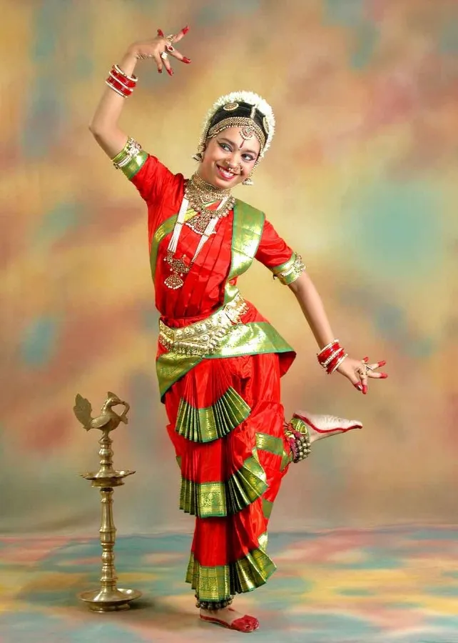
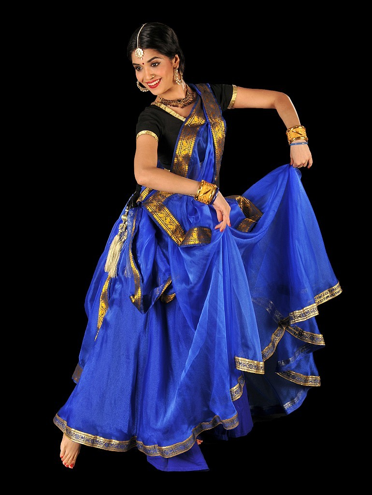

Bharatanatyam
Bharatanatyam is a major form of Indian classical dance that originated in Tamil Nadu. It is one of the eight widely recognized Indian classical dance forms, and expresses South Indian religious themes and spiritual ideas, particularly of Shaivism and in general of Hinduism.
View more

Kathak
Kathak is one of the eight major forms of Indian classical dance. It is the classical dance form from Uttar Pradesh. The origin of Kathak is traditionaly attributed to the traveling bards in ancient northern India known as Kathakars or storytellers.
View more
Kathakali
Kathakali is a major form of classical Indian dance. It is a "story play" genre of art, but one distinguished by the elaborately colourful make-up and costumes of the traditional male actor-dancers.
View more